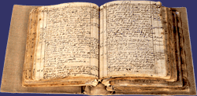

| Martha Moore Ballard was fifty years old when she began her diary on January 1 of 1785. Every day, for twenty-seven years, she recorded the daily events in her diary, beginning with the weather. Initially the entries were short and choppy, but gradually they became fuller and more regular. What began, most probably, as a record of her midwifery and healing work, grew into a remarkably steady account of both the ordinary and the extraordinary events in her life. |
 One of 2 bound volumes of Martha's Diary |
|
| Martha Ballard's
massive but cryptic diary was handed down through her daughter Dolly's family
as a pile of hand-made diary booklets. Remarkably, none were lost. When
a great great-grandaughter of Martha's, Mary Hobart, graduated from medical
school in New York in 1884, Dolly's daughters gave her the diary. Mary Hobart
had the scrambled leaves of the diary put in order and bound in homemade
linen covers. And at the end of her career, in 1930, she donated the diary
to the Maine State Library, where historian Laurel Ulrich found it fifty
years later. |
||
|
When the film A Midwife's Tale was shot, replicas were made of Martha Ballard's small, hand-sewn diary booklets, so the actress who played Martha could write in them. The actual diary booklets are small enough that Martha Ballard could have tucked one into her bag or pocket when heading out to deliver a child or tend to a sick neighbor. The diary suggests, however, that Martha probably wrote most often at home by candlelight when the rest of the family were asleep. On May 11, 1797, for example, she wrote "it is now 11h Evn, my famely have been in bed 2 hours". |
film still: Actress Kaiulani Lee as Martha Ballard |
|
|
Very few women of Martha's
generation left behind writing in any form. Martha's grandmother was able
to muster a clear but labored signature on the one surviving document
bearing her name, but Martha's mother signed with a mark. On the male
side of the family, however, there is a record of education. Martha's
uncle, who was a physician, was the first college graduate in the town
where Martha grew up. Two of her brothers-in-law were also physicians.
And her brother Jonathan was a librarian at Harvard College before becoming
a Congregational minister. |
||
|
Most New England girls were taught to read at least enough to understand the Bible. But writing skills were not considered essential for a girl's education. However, Martha's ability to write cursive (even though it is cruder than the writing of her husband and brother) tells us that someone in Oxford, Massachusetts in the 1740s was interested in educating girls. The original diary in two hand-sewn bound volumes can be found in the Maine State Library: call number Ms B B189. Martha Ballard's diary was transcribed and indexed by Robert and Cynthia McCausland and is available in hardback from Picton Press. |
|
| ||||||||||||||||||